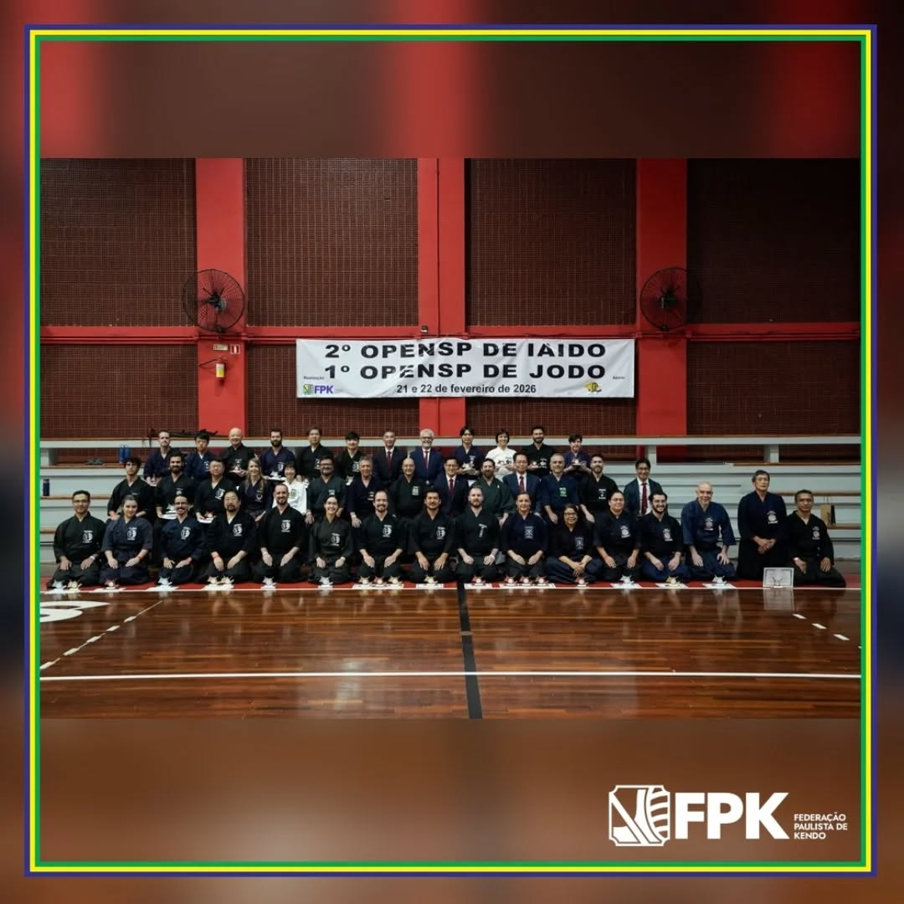

Notícias
2º Campeonato Open São Paulo de Iaido e Jodo 21/02/2026 e 22/02/2026

Foto com todos os participantes do 2º Campeonato Open São Paulo de Iaido e Jodo.
01/03/2026
Nos dias 21 e 22 de fevereiro, A Federação Paulista de Kendo (FPK), em parceria com o SESC, promoveu o 2º Open São Paulo de Iaido e Jodo no SESC Consolação, localizado no centro de São Paulo. O evento contou com a participação de mais de 40 inscritos, incluindo competidores do Chile e Reino Unido. Além disso, foram ministrados seminários pelos instrutores chilenos Nicholas Diaz, Renshi 6º Dan de Iaido, e Julio Villarroel, 6º Dan de Jodo.
Confira abaixo os resultados do Iaido do 2º Campeonato Open São Paulo:
🥇 Campeões Individuais:
1º Kyu: Álvaro Tachibana
1º Dan: Frank Yujiro Matunaga
2º Dan: Bruno Castilho Ferreira
3º e 4º Dan: Henrique Yuji Teixeira Yamauchi
🥈 Vice-Campeões Individuais:
1º Kyu: Tomas Thomazella de Moura
1º Dan: Jose Arnaldo Degasperi da Cunha
2º Dan: Stefano José Blanco Balbontín
3º e 4º Dan: Caio Hikari Tamada Yokoyama
🥉 3º Lugares Individuais:
1º Kyu: Carolina Akemi Martins Morita Nakahara / Ernani Kosei Hirose
1º Dan: Claudio Shigueru Osaka / Kazuyuki Fukamizu
2º Dan: Vinícius Pascotto Gastaldo / Anneliese de Oliveira Lozada
3º e 4º Dan: Luciano Seite Nishikawa / Andrei Sancassani
🥇 Campeões por Equipes:
Equipe (Bragon Team): Frank Yujiro Matunaga, Bruno Castilho Ferreira, Caio Hikari Tamada Yokoyama.
🥈 Vice-Campeões por Equipes:
Equipe (Pira no Pira): Ingred Hilário Cajaty Tachibana, Álvaro Tachibana e Julio Cezar Silva Carvalho de Toledo.
🥉 3º Lugares por Equipes:
Equipe (Mista): Paula Christina Marra Romeiro, Vinícius Pascotto Gastaldo, Stefano José Blanco Balbontín e Carolina Akemi Martins Morita Nakahara.
Equipe (Filhas da Navalha): Ana Lucia Silva de Camargo, Silvana Aparecida Silva Lima e Anneliese de Oliveira Lozada.
A Genbukan Brasil parabeniza todos os Kenshi que participaram do Open SP de Iaido e suas conquistas.